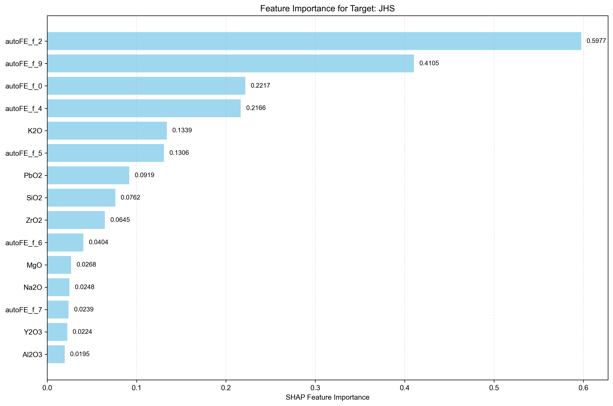
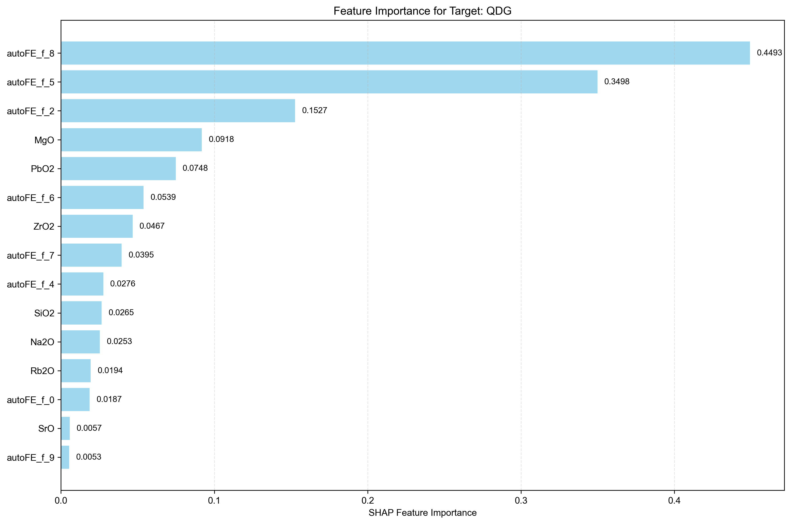
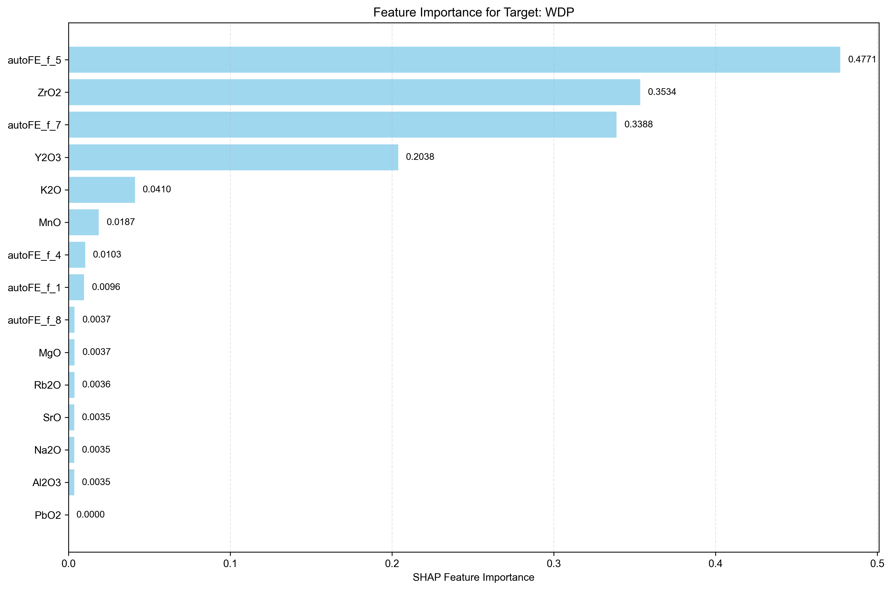
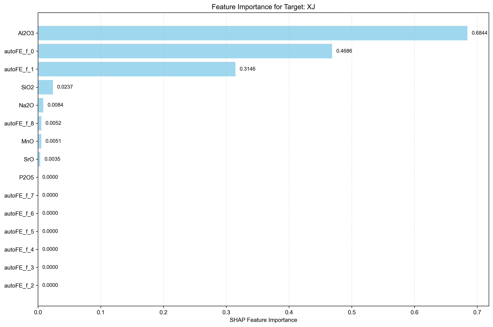
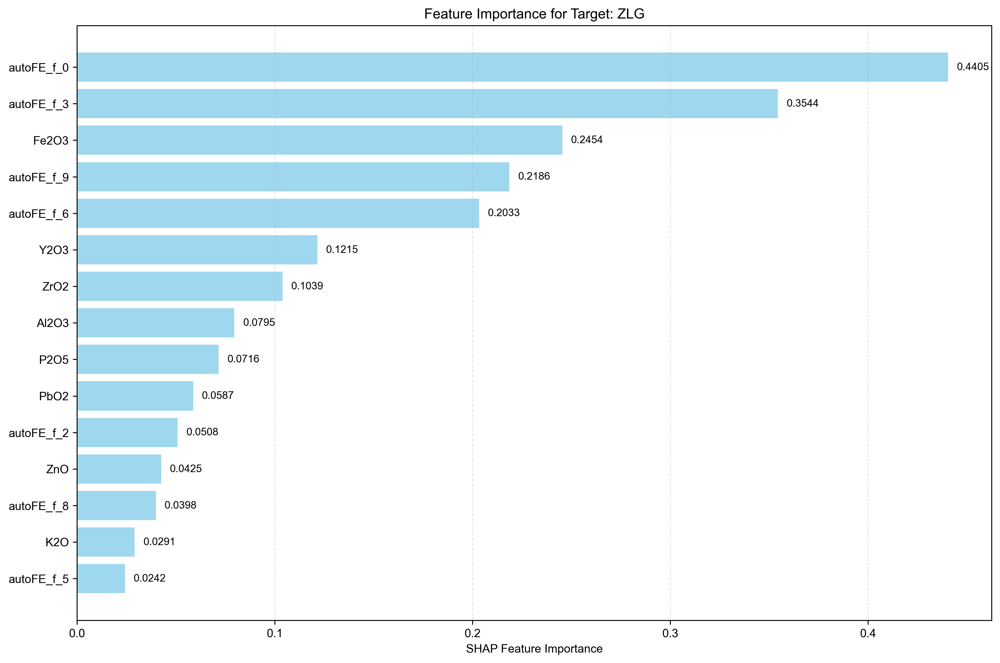

Analysis Method: SHAP
Number of Targets: 5
Generated on:
Targets Analyzed: JHS, QDG, WDP, XJ, ZLG
| Rank | Feature Name | SHAP Importance | Relative Importance (%) |
|---|---|---|---|
| 1 | autoFE_f_2 | 0.5977 | 27.43% |
| 2 | autoFE_f_9 | 0.4105 | 18.84% |
| 3 | autoFE_f_0 | 0.2217 | 10.17% |
| 4 | autoFE_f_4 | 0.2166 | 9.94% |
| 5 | K2O | 0.1339 | 6.15% |
| 6 | autoFE_f_5 | 0.1306 | 5.99% |
| 7 | PbO2 | 0.0919 | 4.22% |
| 8 | SiO2 | 0.0762 | 3.50% |
| 9 | ZrO2 | 0.0645 | 2.96% |
| 10 | autoFE_f_6 | 0.0404 | 1.85% |
| 11 | MgO | 0.0268 | 1.23% |
| 12 | Na2O | 0.0248 | 1.14% |
| 13 | autoFE_f_7 | 0.0239 | 1.10% |
| 14 | Y2O3 | 0.0224 | 1.03% |
| 15 | Al2O3 | 0.0195 | 0.89% |
| 16 | autoFE_f_8 | 0.0158 | 0.73% |
| 17 | Fe2O3 | 0.0156 | 0.72% |
| 18 | ZnO | 0.0126 | 0.58% |
| 19 | P2O5 | 0.0114 | 0.52% |
| 20 | autoFE_f_3 | 0.0086 | 0.39% |
| 21 | autoFE_f_1 | 0.0085 | 0.39% |
| 22 | MnO | 0.0050 | 0.23% |
| 23 | As2O3 | 0.0000 | 0.00% |
| 24 | CuO | 0.0000 | 0.00% |
| 25 | Rb2O | 0.0000 | 0.00% |
| 26 | SrO | 0.0000 | 0.00% |

| Rank | Feature Name | SHAP Importance | Relative Importance (%) |
|---|---|---|---|
| 1 | autoFE_f_8 | 0.4493 | 32.19% |
| 2 | autoFE_f_5 | 0.3498 | 25.06% |
| 3 | autoFE_f_2 | 0.1527 | 10.94% |
| 4 | MgO | 0.0918 | 6.58% |
| 5 | PbO2 | 0.0748 | 5.36% |
| 6 | autoFE_f_6 | 0.0539 | 3.86% |
| 7 | ZrO2 | 0.0467 | 3.35% |
| 8 | autoFE_f_7 | 0.0395 | 2.83% |
| 9 | autoFE_f_4 | 0.0276 | 1.98% |
| 10 | SiO2 | 0.0265 | 1.90% |
| 11 | Na2O | 0.0253 | 1.81% |
| 12 | Rb2O | 0.0194 | 1.39% |
| 13 | autoFE_f_0 | 0.0187 | 1.34% |
| 14 | SrO | 0.0057 | 0.41% |
| 15 | autoFE_f_9 | 0.0053 | 0.38% |
| 16 | Fe2O3 | 0.0048 | 0.34% |
| 17 | Al2O3 | 0.0040 | 0.29% |
| 18 | K2O | 0.0000 | 0.00% |
| 19 | As2O3 | 0.0000 | 0.00% |
| 20 | MnO | 0.0000 | 0.00% |
| 21 | CuO | 0.0000 | 0.00% |
| 22 | ZnO | 0.0000 | 0.00% |
| 23 | Y2O3 | 0.0000 | 0.00% |
| 24 | P2O5 | 0.0000 | 0.00% |
| 25 | autoFE_f_1 | 0.0000 | 0.00% |
| 26 | autoFE_f_3 | 0.0000 | 0.00% |

| Rank | Feature Name | SHAP Importance | Relative Importance (%) |
|---|---|---|---|
| 1 | autoFE_f_5 | 0.4771 | 32.36% |
| 2 | ZrO2 | 0.3534 | 23.97% |
| 3 | autoFE_f_7 | 0.3388 | 22.98% |
| 4 | Y2O3 | 0.2038 | 13.82% |
| 5 | K2O | 0.0410 | 2.78% |
| 6 | MnO | 0.0187 | 1.27% |
| 7 | autoFE_f_4 | 0.0103 | 0.70% |
| 8 | autoFE_f_1 | 0.0096 | 0.65% |
| 9 | MgO | 0.0037 | 0.25% |
| 10 | autoFE_f_8 | 0.0037 | 0.25% |
| 11 | Rb2O | 0.0036 | 0.24% |
| 12 | Na2O | 0.0035 | 0.24% |
| 13 | Al2O3 | 0.0035 | 0.24% |
| 14 | SrO | 0.0035 | 0.24% |
| 15 | SiO2 | 0.0000 | 0.00% |
| 16 | Fe2O3 | 0.0000 | 0.00% |
| 17 | As2O3 | 0.0000 | 0.00% |
| 18 | CuO | 0.0000 | 0.00% |
| 19 | ZnO | 0.0000 | 0.00% |
| 20 | PbO2 | 0.0000 | 0.00% |
| 21 | P2O5 | 0.0000 | 0.00% |
| 22 | autoFE_f_0 | 0.0000 | 0.00% |
| 23 | autoFE_f_2 | 0.0000 | 0.00% |
| 24 | autoFE_f_3 | 0.0000 | 0.00% |
| 25 | autoFE_f_6 | 0.0000 | 0.00% |
| 26 | autoFE_f_9 | 0.0000 | 0.00% |

| Rank | Feature Name | SHAP Importance | Relative Importance (%) |
|---|---|---|---|
| 1 | Al2O3 | 0.6844 | 45.22% |
| 2 | autoFE_f_0 | 0.4686 | 30.96% |
| 3 | autoFE_f_1 | 0.3146 | 20.79% |
| 4 | SiO2 | 0.0237 | 1.57% |
| 5 | Na2O | 0.0084 | 0.56% |
| 6 | autoFE_f_8 | 0.0052 | 0.34% |
| 7 | MnO | 0.0051 | 0.34% |
| 8 | SrO | 0.0035 | 0.23% |
| 9 | MgO | 0.0000 | 0.00% |
| 10 | K2O | 0.0000 | 0.00% |
| 11 | Fe2O3 | 0.0000 | 0.00% |
| 12 | As2O3 | 0.0000 | 0.00% |
| 13 | CuO | 0.0000 | 0.00% |
| 14 | ZnO | 0.0000 | 0.00% |
| 15 | PbO2 | 0.0000 | 0.00% |
| 16 | Rb2O | 0.0000 | 0.00% |
| 17 | Y2O3 | 0.0000 | 0.00% |
| 18 | ZrO2 | 0.0000 | 0.00% |
| 19 | P2O5 | 0.0000 | 0.00% |
| 20 | autoFE_f_2 | 0.0000 | 0.00% |
| 21 | autoFE_f_3 | 0.0000 | 0.00% |
| 22 | autoFE_f_4 | 0.0000 | 0.00% |
| 23 | autoFE_f_5 | 0.0000 | 0.00% |
| 24 | autoFE_f_6 | 0.0000 | 0.00% |
| 25 | autoFE_f_7 | 0.0000 | 0.00% |
| 26 | autoFE_f_9 | 0.0000 | 0.00% |

| Rank | Feature Name | SHAP Importance | Relative Importance (%) |
|---|---|---|---|
| 1 | autoFE_f_0 | 0.4405 | 19.81% |
| 2 | autoFE_f_3 | 0.3544 | 15.94% |
| 3 | Fe2O3 | 0.2454 | 11.03% |
| 4 | autoFE_f_9 | 0.2186 | 9.83% |
| 5 | autoFE_f_6 | 0.2033 | 9.14% |
| 6 | Y2O3 | 0.1215 | 5.46% |
| 7 | ZrO2 | 0.1039 | 4.67% |
| 8 | Al2O3 | 0.0795 | 3.57% |
| 9 | P2O5 | 0.0716 | 3.22% |
| 10 | PbO2 | 0.0587 | 2.64% |
| 11 | autoFE_f_2 | 0.0508 | 2.28% |
| 12 | ZnO | 0.0425 | 1.91% |
| 13 | autoFE_f_8 | 0.0398 | 1.79% |
| 14 | K2O | 0.0291 | 1.31% |
| 15 | autoFE_f_5 | 0.0242 | 1.09% |
| 16 | MgO | 0.0228 | 1.03% |
| 17 | autoFE_f_1 | 0.0210 | 0.94% |
| 18 | autoFE_f_7 | 0.0186 | 0.84% |
| 19 | SiO2 | 0.0172 | 0.77% |
| 20 | SrO | 0.0168 | 0.76% |
| 21 | As2O3 | 0.0148 | 0.67% |
| 22 | autoFE_f_4 | 0.0145 | 0.65% |
| 23 | Na2O | 0.0082 | 0.37% |
| 24 | MnO | 0.0062 | 0.28% |
| 25 | CuO | 0.0000 | 0.00% |
| 26 | Rb2O | 0.0000 | 0.00% |

• This report shows feature importance analysis for multi-target regression using SHAP method.
• Higher importance values indicate features that have more influence on the target prediction.
• Rankings are calculated independently for each target.
• Relative importance percentages show each feature's contribution relative to all features for that target.